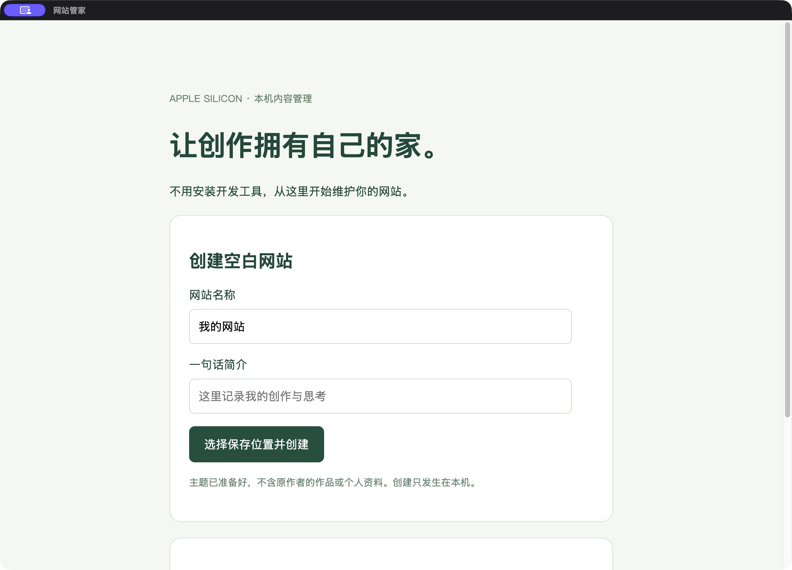
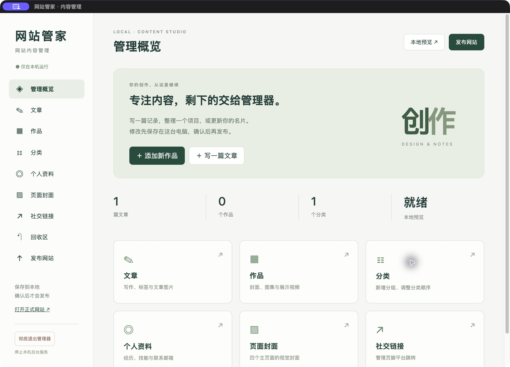
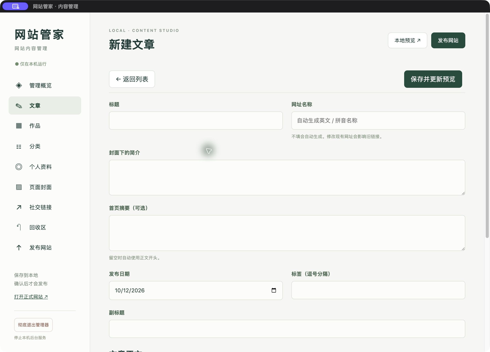
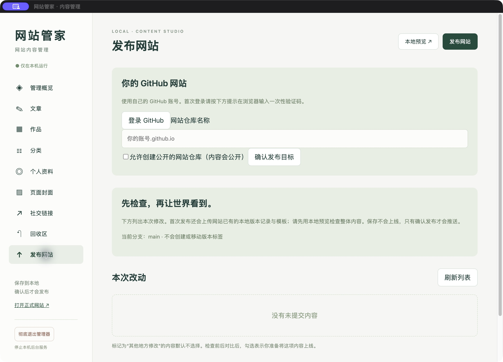

不用写代码，
也能创建并维护自己的个人网站。
这份说明适用于「网站管家」开源预发布。只支持 M 系列 Mac，macOS 14 或更新版本。应用已内置运行环境；保存只修改本机，发布是一个单独的确认动作。
01 安装与创建网站
安装文件使用「网站管家-0.1.0-arm64.dmg」；也可以解压「网站管家-0.1.0-AppleSilicon.app.zip」，将完整的 .app 拖入「应用程序」。更新旧版前先彻底退出，再替换应用；原网站文件夹无需重新创建。首个公开版本继承内部 0.2.5 的功能。0.1.0 包含 GitHub 重新授权与仓库连接确认引导，保留远端更新检查、差异对比与冲突处理；同步前备份，完成后先预览，再单独确认发布。保留头像替换与 ⌘Q 直接退出。这是未签名、未公证测试包。若系统阻止打开，请先确认文件来自可信的分享者，再由你自行在系统「隐私与安全性」处理打开许可。不需要关闭系统安全保护。

下次打开可以点击「继续编辑最近的网站」，不用重新寻找路径。已有网站请点击「选择网站文件夹」，选择包含网站配置、文章和作品目录的整个根文件夹。移动后的项目也从这里重新选择。没有本地版本记录时，应用会先询问是否建立记录；这个动作不会上传。
02 六个编辑入口

写记录、教程和创作过程。设置标题、日期、摘要与标签，用工具栏添加标题、粗体、列表、链接和图片。
填写名称、分类、简介与正文。选封面，加入图片和视频，拖动调整展示顺序，填写图片说明。
新增、改名、排序。分类改名会同步作品归属；删除非空分类先选择作品要搬去哪里。
选择或替换首页头像，填写自我介绍、工作与教育经历、技能、兴趣和邮箱。没有内容可以留空。
分别替换首页、作品、归档、关于的背景图和简短介绍，保持统一风格。
填写各平台公开主页链接。按钮出现在网站页脚，留空或移除即可隐藏。
03 用一篇文章练习

例如标题填「台灯练习记录」，摘要填「从草图到模型的三次调整」。点击白色正文区输入内容。选中小节标题，再点工具栏「标题」；选中文字点 B 加粗。选中链接文字，再点「链接」输入完整网址。
「＋ 图片」打开素材选择器，可选择已有图片，也可从电脑导入。导入会保存原件并生成适合网页的副本。文章网址名称会自动生成，可改为短英文名称，例如 lamp-study。改已有内容的网址后，要检查旧链接是否仍有人使用。
首页头像
进入「个人资料」，在「首页头像」点击「选择头像」或「替换头像」。可选已有素材，或导入 JPG、PNG、WebP 图片；建议使用方形图片，首页会居中裁切为圆形。点击「保存修改」后打开本地预览查看。点击「移除头像」再保存会恢复「创作」圆标，图片仍保留在素材库。旧版空白网站首次设置头像时，仅更新首页圆标区域；自定义过此处的首页会提示检查，避免覆盖。
04 新增作品与分类
先在「分类」点击「＋ 新分类」，名称填「个人练习」，保存。接着在「作品」新建「台灯」，分类选择「个人练习」，选封面，加入图片与视频。图片可以拖动排序，说明直接填写。视频导入可能需要更长时间，请等待进度完成，再保存作品。
如果删除后又编辑了台灯，恢复时会弹出两个状态供比较。默认保留新文字，可只补回旧分类与归属。选择「恢复删除前」只替换被你选中的那一项；执行前会另做备份。
05 检查并发布到自己的 GitHub

进入「发布网站」，点击「登录 GitHub」。界面提示一次性验证码时，在浏览器打开 github.com/login/device 输入验证码并完成授权。不要把密码或 Token 填到网站内容里。
仓库名称使用 你的账号.github.io。例如 GitHub 用户名是 designer-demo，填 designer-demo.github.io。首次没有仓库时勾选允许创建公开网站仓库，再确认。仅支持个人账号的根网站仓库与 main 分支，不支持组织仓库或其他项目路径。账号与目标不一致或项目已连到另一个仓库时，应用会停止，不会自动替换。
查看每项「修改前后对比」，核对文字、图片、分类及发布范围。其他地方改过的文件默认不勾选。确认本地效果后，点击「确认发布到正式网站」，再确认公开。任何人都可能看到选中的内容和公开仓库文件。
06 搬家、分享与退出
| 你要做什么 | 怎么做 |
|---|---|
| 移动自己的网站 | 先彻底退出，把整个网站文件夹移动到新位置，重新打开应用并选新文件夹。 |
| 复制出第二个项目 | 复制整个网站文件夹，再从向导打开副本。两个路径分别记录后台状态与备份，不会连接原目录的旧服务。 |
| 切换项目 | 菜单「网站管家 → 切换项目」，停止原项目的服务，再选择新项目。 |
| 分享给朋友 | 私下发送 DMG 或应用 ZIP，并附中文操作说明。空白模板已内置，朋友可直接在应用里创建网站。朋友自己填写资料、登录自己的 GitHub。不要发送你的个人网站目录、私有备份或登录资料。 |
| 彻底退出 | 按 ⌘Q 或菜单「退出网站管家」会直接停止服务并退出，未保存输入会丢失；界面底部「彻底退出管理器」仍需确认。正在上传或发布时先等待完成。 |
07 遇到提示时怎么处理
0.1.0 已修复中文及空格路径下的预览编码问题。已有项目可直接重新打开；构建失败时展开「查看错误详情」，按脱敏诊断处理。
| 提示类型 | 处理方法 |
|---|---|
| 依赖缺失 | 确认应用完整。不要只复制应用包内部某个文件，重新安装完整测试包。 |
| 路径错误 | 选择整个网站根目录。如果刚移动过项目，重新选择新位置。 |
| 目录权限 | 选自己有写入权限的文件夹，例如「文稿」。不要直接在应用包或只读磁盘里编辑网站。 |
| 内容格式 | 检查刚修改的文章或作品；先在回收区或备份恢复，再重新构建。 |
| 网络或登录 | 检查网络、重新登录 GitHub，再重试。GitHub 出现暂时问题不会让本地内容消失。 |
| 端口冲突 | 应用会尝试附近空闲端口。全部占用时，彻底退出旧服务后重新打开。 |
| 远端有新提交 | 在「发布网站」点击「检查远端更新」。展开文件对比；冲突逐项选择保留本地、采用远端或手动编辑，再「确认同步到本地」。同步前自动备份，不上传内容；完成后先本地预览再确认发布。版本记录不一致时，按界面引导重新授权 GitHub、重新确认仓库连接，再次检查。重新授权不会合并提交历史；若仍不一致，本地内容会保留并停止同步，需先备份再合并历史。 |
需要协助时发送脱敏错误详情和你刚执行的操作，不要发送密码、验证码、Token 或完整私有备份。菜单「环境诊断」可检查内置工具是否齐全。
网站管家 0.1.0 开源预发布 · 主题基于 Hux Blog · 保存与发布分开